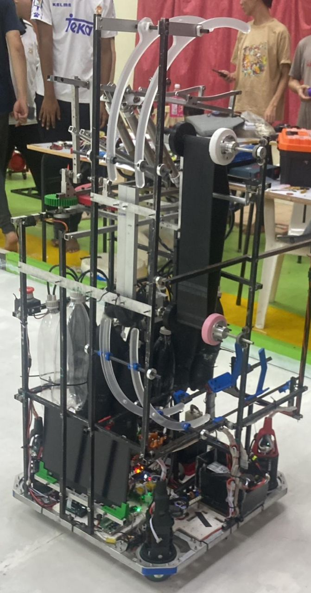

Projects
View all on GitHub →ABU Robocon 2024 R2 Robot
Led the image processing pipeline, including color masking to isolate red/purple balls. Managed dataset labeling and trained YOLO object detection models using rented cloud GPUs to identify balls and silos, facilitating seamless remote team collaboration.
Advanced OpenCV filtering, full YOLO model lifecycle (labeling to inference), and managing distributed cloud infrastructure for AI training.

ABU Robocon 2025 Basketball Robot
Developed the camera vision system to detect basketball hoops and engineered the software integrating vision data with the robot’s kinematics for autonomous rotating and aiming. Handled core motor control and embedded system tasks.
Translating vision coordinates into precise motor movements, aiming algorithms, and bridging high-level processing with low-level embedded hardware.
UTM Robocon Minigame 2024
Constructed a foundational robot for a less-restrictive internal competition. Gained hands-on experience by building a complete robotic system from the ground up to prepare for the official ABU Robocon challenges.
End-to-end system integration, including the basics of autonomous navigation, sensor polling, motor communication protocols, and overall architecture.
UTM Robocon Apprentice Tasks
Completed an intensive 6-week cross-disciplinary technical bootcamp (2 weeks per module) spanning Programming, Electronics, and Mechanical Engineering to build a robust foundation in robotics.
PCB design and fabrication, foundational embedded programming, and using SolidWorks for mechanical part design and assembly.